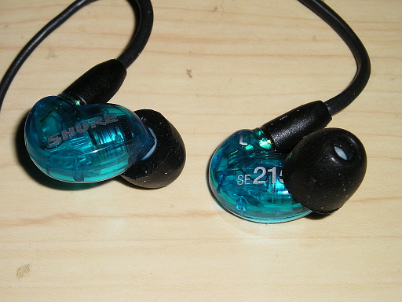
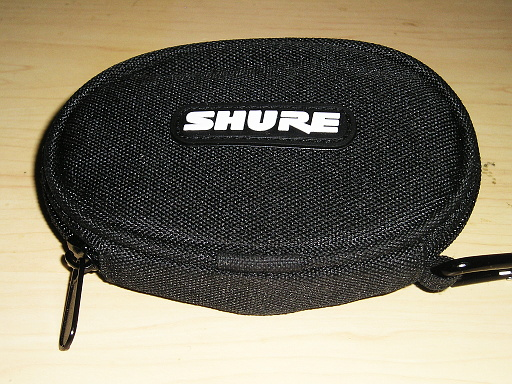
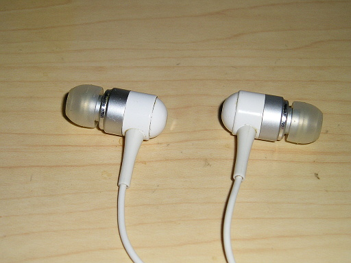
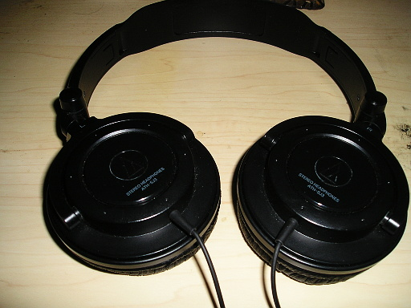
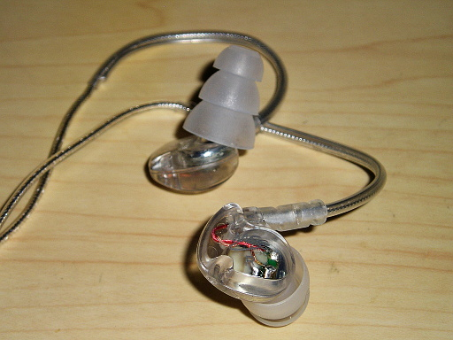
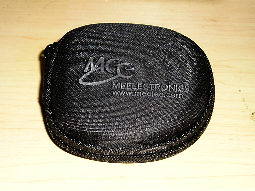
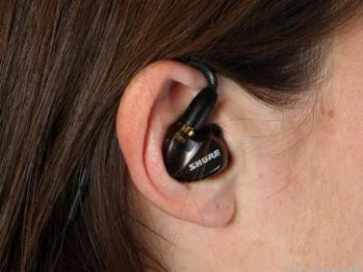
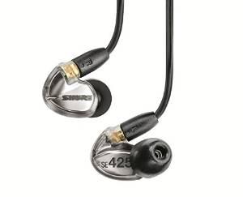
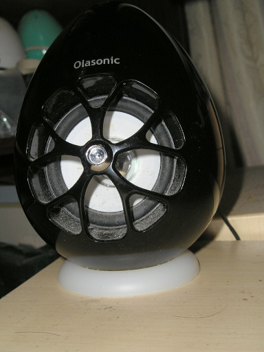

イヤホンを新調しました。
機種は SHURE の se 215 special edition です。
高級機の入門機とよく言われているようです。ケースも付いてます。
気になるお値段はリンク先をごらんください。
イヤホンの買い替えはこれまでに何度かしていて、元々ははデジタル・オーディオ・プレイヤーに付属するものを使っていました。それが断線して使えなくなり、間に合せでコンビニでメーカー不詳のイヤホンを購入してそれを使っていました。下の写真がそのイヤホンになります。
このイヤホンには欠点がありました。音楽を再生している最中に、左耳のイヤホンがポロポロととれるのですね。異なるサイズのイヤーチップに交換してもだめで、試しにシュア掛けをしてもだめといった具合で、ストレスフルでした。
イヤホンがだめならヘッドホンにしてみよう、ということで購入したのが audio-technica ポータブルヘッドホン ATH-SJ3BK です。
これで耳から外れるという問題は解決されたのですが、いかんせん低価格のヘッドホンのため、お世辞にも音質がいいとはいえません。中高音域の音がこもっていますし、低音の分離も非常によろしくありません。
それにデジタル・オーディオ・プレイヤーの音源を外で聴くのに、やはりヘッドホンは大げさです。またかさばるため取り扱いも面倒です。なので、結局イヤホンに戻りました。
それで新たに購入したのが MEElectronics Sport-Fi M6 インイヤー スポーツ ヘッドホン クリア Earphone-M6-CL-MEE です。
2000 円弱と安価な機種なのにケースまでついています。
この機種はイヤーチップがシングル・フランジ、ダブル・フランジ、トリプル・フランジのものが使えます。なのでどれかがフィットすると快適に使えるはずです。私の場合は左耳をトリプル・フランジのイヤーチップにするとベスト・フィットが得られました。
またこの機種はシュア掛け ( リンク先は YouTube なので音が出ます ) で装着するので、余程のことがない限り、イヤホンが耳から外れるということがなくなりました。ちなみにシュア掛けとは以下の写真のような装着の仕方をいいます。
がこのイヤホンにも欠点があります。それは音がよくないということです。
特に中高音の抜けが悪く、こもった音がします。低音も分離がよくありません。2000 円弱の値段ですからそんなものかもしれません。
音質の悪さにがまんができず、最終的に最初に述べた SHURE の se 215 special edition に落ち着きました。
ですが落ち着いて音を聴いてみると、se 512 special edition でも、若干ですが中高音域のこもりがあり、音が抜けきっていない感じがします。低音も分離が若干ですが不十分です。これらのことはじっくりと音を聴かないと気が付かないレベルです。またこれ以上は好みの問題のような気もしますし、オーディオ・マニアのようにイヤホンを次々と買い換えるわけにもいきません。
ですが次に買い換える機会があれば、SHURE の se 425 あたりを買おうかと思っています。
ちなみに自分の音の良し悪しは、パソコンに東和電子の TW-S7 を直結して得られるサウンドを基準にしています。
なので今のところ、東和電子の TW-S7 のサウンドに一番近いサウンドを出しているのが SHURE の se 215 special edition ということになります。将来 se 425 に買い換えたら評価も変わるかもしれませんが。